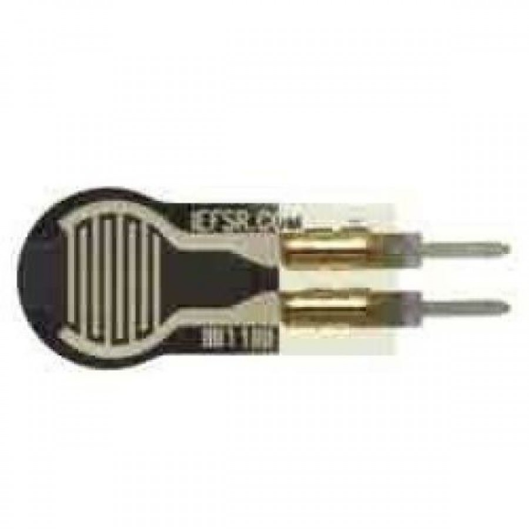
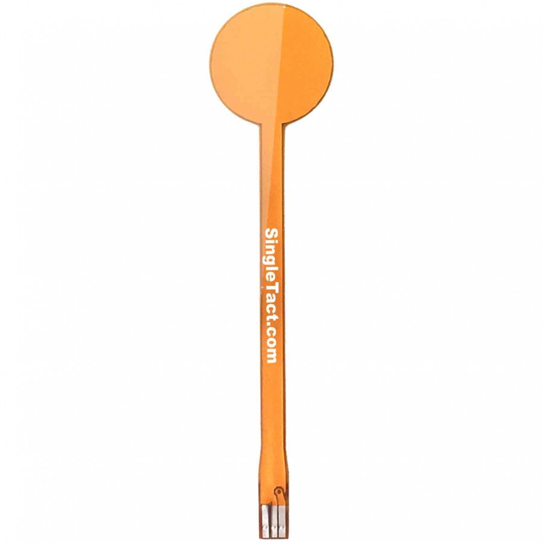
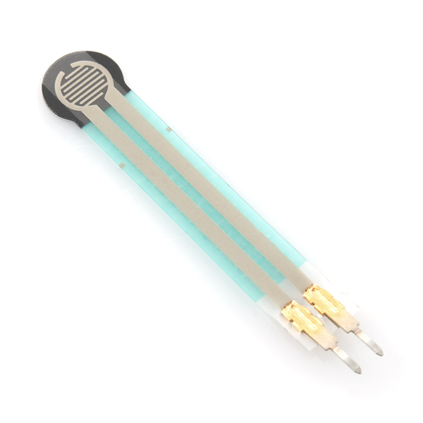
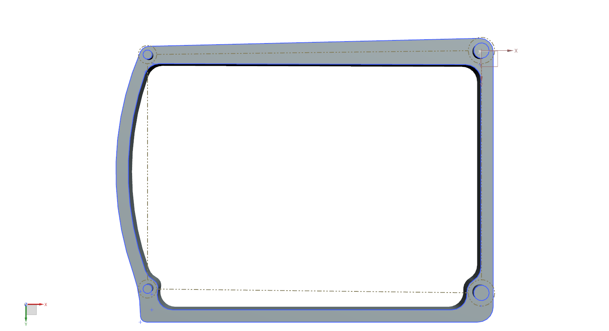

Integrating Physics-based and Data-Driven Methods to Accurately Model Haptic Textures
05/03/2018 MeetingLast Definitions
- Force Will be induced with springs
- Initial measurements without force sensor
- Track movement and velocity with camera (~250 fps)
To-Do
- Design A base that holds up the Mechanism. [Ongoing]
- Adapt Accelerometer [Ongoing]
- Search for a feasible force sensor
- Buy a Driver
Main requeriments


Force range
Mean forces in texture modeling [CUL2014]:

How accurate nano 17 is?
[GUO2016]:
- Sensing Range:
- Resolution:
- hysteresis: No data.
- Repeatability: High
- Diameter:

Options
- Variense Digital Triaxial Force Sensor (FSE103) {800 USD}
- Interlink Electronics 0.2" Circular FSR {6.08 USD}
- 100g Micro Load Cell {7 USD}
- Capacitive Force Sensor {18 USD}
Variense Digital Triaxial Force Sensor (FSE103) {800 USD}
Closest option, 3 axis
- Sensing range:
- Resolution: No data.
- Hysteresis No data.
- Repeatability: High
- Diameter:

Interlink Electronics 0.2" Circular FSR {6.08 USD}
- Sensing range:
- Resolution: Continuous.
- Hysteresis: .
- Repeatability: High
- Diameter:

100g Micro Load Cell {7 USD}
- Sensing range:
- Resolution: Continuous.
- Hysteresis: .
- Repeatability: High .
- Dimensions:

Capacitive Force Sensor {18 USD}
- Sensing range:
- Resolution: .
- Hysteresis: .
- Repeatability: High
- Diameter:
i2c Interface, Digital DAQ
{28USD}:

Proposal
We could try to use a resistive sensor (4mm of diameter). It can measure force from 0.1N to 10N depending on the pressure in the measuring region. it is not very accurated but can give us information to start working.

-
Design a Base that holds up the mechanism
Adapt Accelerometer and Springs
-
Configure the camera
See image below
Depends On force sensor choose
Last Step


Bibliography
-
[CUL2014] Culbertson, H., Unwin, J., & Kuchenbecker, K. J. (2014). Modeling and rendering realistic textures from unconstrained tool-surface interactions. IEEE Transactions on Haptics, 7(3), 381–393. https://doi.org/10.1109/TOH.2014.2316797
-
[GUO2016] Guo, J., Li, M., Ho, P., & Ren, H. (2016). Design and Performance Evaluation of a Force/Torque Sensor for Tele-Operated Catheterization Procedures. IEEE Sensors Journal, 16(9), 3208–3215. https://doi.org/10.1109/JSEN.2016.2522657